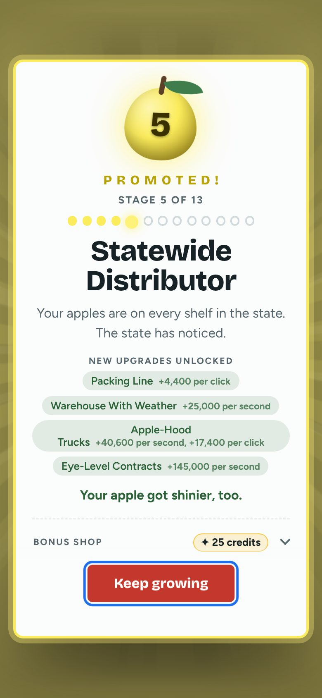
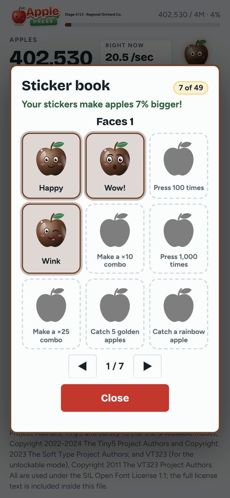

What it is and how it works
Apple Press is a free clicker game for kids in a single web page. Tap the apple to pick apples, buy upgrades, and move through stages that each bring a promotion party, a new animated scene and new upgrades. The whole game, with scenes, fonts and code, is one HTML file. It runs with no server and keeps progress in your browser, so after one load it needs no internet.
Why it exists
A gentle clicker for children and the grown-ups who sit with them: free, with no ads, purchases or accounts, no sounds, no timers or streaks, and nothing to trade. It also tests how much game fits in one small file anyone can save, send to a friend and open offline.
Built for kids
Big tap targets, no timers or streaks, and a Grown-ups door in front of links.
13 stages
A first adventure of six stages, then a longer journey, with a sticker book of 49 stickers.
No sound
A visual and tactile game, with less stimulation for sensory challenges. Calm effects tone down motion.
Send it to a friend
One file, or two smaller copies for messages and email. Double-click to open.

A promotion party when a new stage opens.
The sticker book: 49 stickers to earn. It fills a bigger screen too.
It fills a bigger screen too.